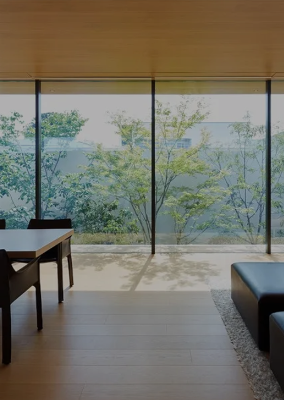
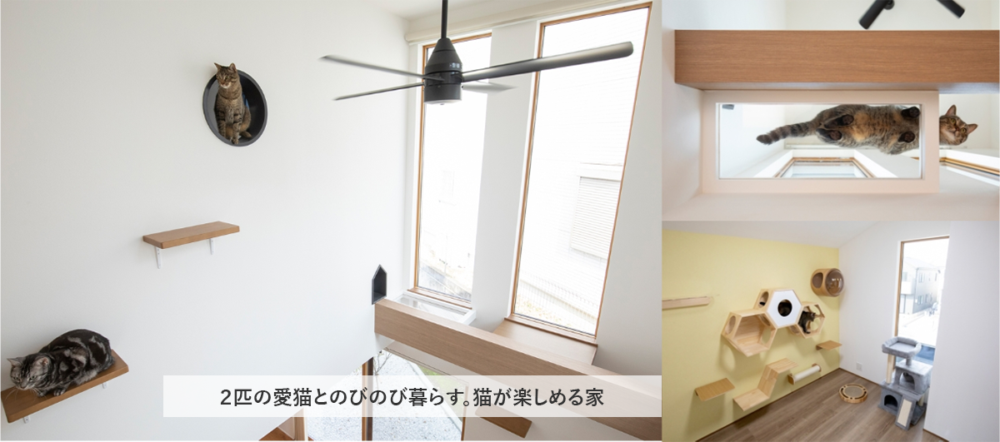
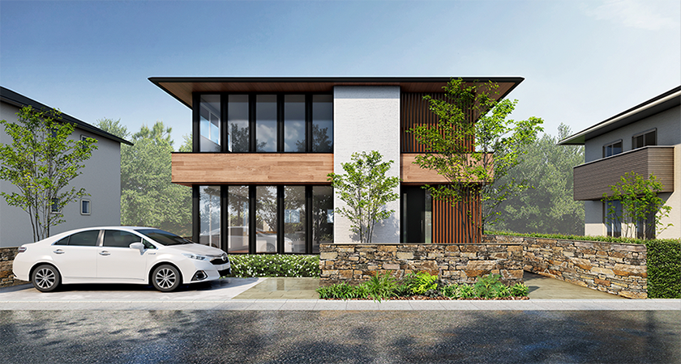
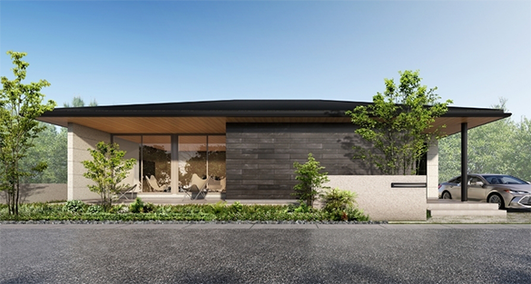
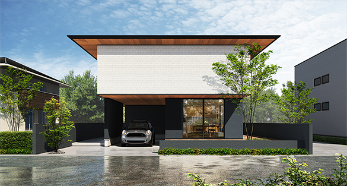
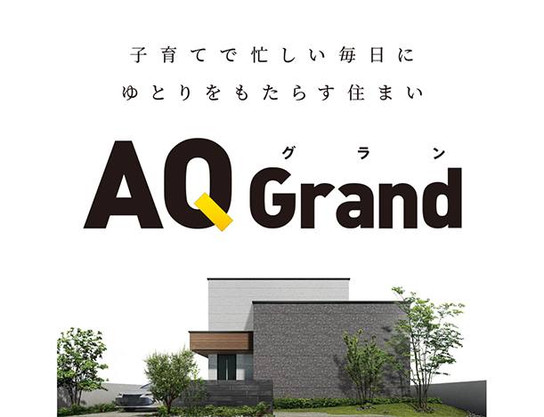
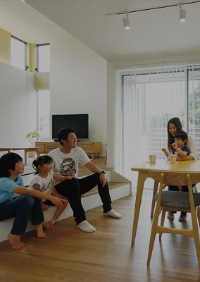
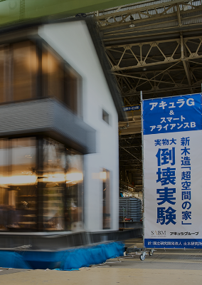
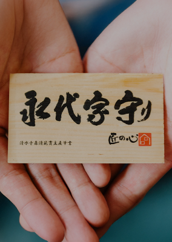

① 会社・基本データ

アキュラホームは、株式会社AQ Group（旧社名：株式会社アキュラホーム、2022年10月社名変更）の主力住宅ブランド。創業は1978年、宮沢俊哉氏が宮沢建築として創業した木造注文住宅メーカー。40年以上にわたり掲げる「適正価格住宅」という理念のもと、大手HMとローコストHMの中間帯ポジションを確立している。
| 項目 | 内容 |
|---|
| 会社名 | 株式会社AQ Group（旧社名：株式会社アキュラホーム） |
| 設立 | 1986年（創業は1978年） |
| 創業者・代表 | 代表取締役会長 宮沢俊哉／代表取締役社長 加藤博昭（2025年3月就任） |
| 本社 | 埼玉県さいたま市西区三橋5-976-1（2024年5月、純木造8階建て「AQビル」に移転） |
| 資本金 | 9,314万円 |
| 売上高 | 695億6,400万円（2025年2月期・40期、4年連続で過去最高） |
| 営業利益 | 17億円（前期比3.7％増） |
| 純利益 | 10億3,400万円（前期比32.4％増） |
| 従業員数 | 約1,577名（2024年3月時点、パート含む） |
| 年間販売戸数 | 約1,900〜2,000棟（2021年度2,094棟／2023年度1,966棟） |
| 対応エリア | 関東・東海・関西・中国・九州の直営＋「フォレストビルダーズ」加盟工務店 |
| 主要事業 | 木造注文住宅／中大規模木造建築／分譲／リフォーム／資産活用 |
| 上場区分 | 非上場 |
グループ／ネットワーク
- JAHBnet（ジャーブネット／旧アキュラネット）：1998年にアキュラホームが主宰して発足したホームビルダー連合で、2023年12月31日付で解散。ピーク時は最大631社、累計供給棟数16万棟超。
- フォレストビルダーズ（後継ネットワーク）：2024年春に立ち上げたJAHBnetの後継組織。40期末時点で30社、41期目標60社。品質・性能基準を厳格化した少数精鋭型の連合体。
- 中大規模木造：非住宅木造（保育園・オフィス・商業施設）にも本格参入。CLT・集成材を活用した脱炭素建築を推進。
- 海外展開：2023年以降、アジア圏（インドネシア等）での木造技術輸出・現地法人設立を推進。
企業理念：「適正価格住宅」
アキュラホームが40年以上掲げる中核コンセプト。「大手HMはブランド料・広告費・中間マージンで高すぎる」「ローコストHMは性能・デザインを削りすぎる」という二極化に対し、「本当に価値のある部分にだけお金をかけ、ムダを徹底的に省いた適正な価格で高性能・高品質の家を届ける」という思想。
この思想を体系化したのが、創業者・宮沢俊哉氏が開発した「アキュラシステム」（住宅の全工程を数値化・標準化し原価を透明化する積算システム）。1993年に業界へ公開された。
一言で言うと？「適正価格で建てる高性能注文住宅」。完全自由設計で大空間・大開口を実現しながら、坪単価は大手HMより1.5〜2割安い。ZEH水準（断熱等級5）を標準、最上位は断熱等級7まで対応。大手HMは高すぎ、ローコストHMは不安、という30〜40代共働き層に刺さるポジション。
② 商品ラインナップと坪単価

注文住宅（フルオーダー）

超空間の家
65〜85万円/坪
主力商品。8トン壁×剛木造で柱なし30帖

超空間の平屋
65〜80万円/坪
平屋版。バリアフリー・老後対応

超断熱の家プレミアム
75〜95万円/坪
断熱等級7対応（UA値0.26以下）

AQ Grand（グラン）
80〜105万円/坪
最上位モデル。3階建て・二世帯対応
| 商品名 | 坪単価目安（2026年） | 主な特徴 |
|---|
| 超空間の家 | 65〜85万円 | 主力商品。8トン壁×剛木造構法で柱なし30帖・大開口6mを実現。2022年グッドデザイン賞 |
| 超空間の家 スマート | 55〜70万円 | 超空間の家の廉価版。建材・設備の商流を見直してコスパ強化 |
| 超空間の平屋 | 65〜80万円 | 平屋版。1階完結・バリアフリー。2023年発売 |
| 超断熱の家プレミアム | 75〜95万円 | 断熱等級7対応。2023年7月発売、200棟限定からスタート |
| AQ Grand | 80〜105万円 | 最上位モデル。高級感・大邸宅志向 |
| 匠空調の家 | 70〜85万円 | 全館空調「匠空調」標準搭載 |
参考：規格・ブランド派生商品
| 商品／ブランド | 概要 |
|---|
| ALBA（アルバ） | ZEH対応の企画型住宅（一部エリア展開）。坪単価55〜65万円目安 |
| 樹の家 | 自然素材・無垢床志向のデザインライン（地域限定で継続） |
| プレミアム・ブランシュ | 邸宅テイストの上位グレード（支店・分譲地限定） |
| AQ HAUS | 企画型コスパ特化モデル |
※「プレミアム・ブランシュ」「プレミアム・ヒュージ」は一部支店や分譲地限定の名称で、全国展開ではありません。最新ラインナップは展示場・最寄支店で要確認。
実態の坪単価相場（各種調査データ）
| 調査ソース | 平均坪単価 |
|---|
| ouchipalette（建てた方のアンケート実績） | 約65.9万円 |
| タテルヤ（2025年最新） | 約71.3万円 |
| 不動産売却マイスター（2026年版） | 約65万円（標準）〜85万円（上位） |
| HOME4U 家づくりのとびら（2026年） | 65〜80万円（商品・オプションで変動） |
実質総額の目安（本体以外を含む）
| 項目 | 比率・金額 |
|---|
| 本体工事費 | 坪単価×延床面積 |
| 付帯工事費・諸経費 | 本体の約20〜25% |
| 外構費 | 150〜250万円 |
| 地盤改良費（必要時） | 50〜100万円 |
| 実態の総額坪単価 | 75〜95万円（諸費用・外構込み） |
標準坪単価は大手HMより約1.5〜2割安いが、オプション（匠空調・断熱等級7・タイル外壁など）を重ねると大手中堅と同水準まで上がる。「適正価格の範囲で着地させる」ためには、契約前に上限金額と優先順位を明確にしておく必要がある。
③ 構造・工法

基本工法：木造軸組工法＋剛木造構法（AQダイナミック構法）
アキュラホームの主力は、在来の木造軸組（柱と梁）をベースに、独自の耐力壁と金物工法で補強した「剛木造構法」。2019年以降の主力商品「超空間の家」および「超断熱の家プレミアム」ではこの剛木造構法を採用している。
| 項目 | 詳細 |
|---|
| 基本工法 | 木造軸組工法（在来工法） |
| 補強 | 独自耐力壁「8トン壁」＋メタルウッド工法（金属補強接合） |
| 大空間 | 柱なし30帖（約50m²）／大開口6mを木造で実現 |
| 耐震等級 | 全棟 等級3（建築基準法の1.5倍／消防署・警察署と同等） |
8トン壁（独自耐力壁）
アキュラホームが独自開発し特許を取得した超耐力壁。
| 項目 | 数値 |
|---|
| 壁倍率 | 15倍（建築基準法の最大値5倍の3倍相当） |
| 耐力 | 1枚で約8トンの水平力に耐える（一般的な耐力壁の約4〜5倍） |
| メリット | 少ない壁・柱で大空間を実現。木造で柱なし30帖を可能にする中核技術 |
メタルウッド工法
通し柱や横架材の接合部を金属プレートで補強し、従来の仕口・凹凸加工による断面欠損を減らす工法。木材の強度を活かしつつ、接合部の破壊から起こる倒壊リスクを低減。
共同仕入れによる資材調達（旧JAHBnet・現フォレストビルダーズ）
長年にわたりJAHBnet（最大631社・累計16万棟超／2023年末解散）で培った共同仕入れノウハウをベースに、集成材・構造材を一括調達。スケールメリットにより、中堅HM単独では難しい品質と価格のバランスを実現している。これがアキュラホームの「適正価格」の中核でもある。2024年以降は後継ネットワーク「フォレストビルダーズ」が同役割を担う。
実大耐震実験の実績
| 実験 | 概要 |
|---|
| 実大実験の実績 | 住宅「超空間の家」での実大実験は4回、純木造ビル等を含めると計5回。8トン壁を使った大開口・大空間・大吹抜の耐震等級3建物で震度7クラスの地震波を計10回以上加振 |
| 結果 | 倒壊・大破なし。構造・外壁・内装の損傷も軽微 |
| 実験施設 | 国立研究開発法人 防災科学技術研究所「E-ディフェンス」を利用 |
| 業界的評価 | 大手HMでは一条工務店・積水ハウス級で実施される実大実験を、中堅ながら継続実施している点が特徴 |
基礎工法
- 高強度ベタ基礎。配筋ピッチ・コンクリート強度は建築基準法を上回る自社基準
- 基礎立ち上がり一体打ちを標準オプションで選択可能（雨水・シロアリ侵入抑制）
④ 耐震性能
基本スペック
| 項目 | 内容 |
|---|
| 耐震等級 | 全棟 等級3（最高等級） |
| 構造計算 | 許容応力度計算を標準実施（木造2階建てでも実施） |
| 耐力壁 | 8トン壁（壁倍率15倍）＋一般耐力壁の組み合わせ |
| 制震装置 | オプションで制震ダンパー搭載可能 |
地震建替保証
| 項目 | 内容 |
|---|
| 保証名 | 地震建替保証 |
| 保証期間 | 引き渡しから10年間 |
| 保証内容 | 対象地震で全壊・大規模半壊判定された場合、100%原状復帰での建て替えを保証 |
| 業界的位置 | 中堅HMでこの水準の地震建替保証を標準付帯するメーカーは希少 |
他社との耐震比較
| ハウスメーカー | アキュラホーム | 一条工務店 | 住友林業 | アイ工務店 | タマホーム | クレバリー |
|---|
| 耐震等級 | 全棟等級3 | 全棟等級3 | 等級3対応 | 全棟等級3 | 等級3対応 | 等級3対応 |
| 特徴 | 8トン壁で大空間も等級3維持 | ツインモノコック／E-ディフェンス253回 | BF構法で大開口も等級3可能 | W-GEO工法／1cm単位自由設計 | 仕様・プランによる | SPG構造＋プレミアム・ハイブリッド |
- 「大空間・大開口」と「耐震等級3」の両立は木造では技術的に難しく、8トン壁はこの課題への明確な解
- ただし耐震等級3は構造計算上の等級であり、施工精度が品質を左右する点は他社と同じ
- 地震建替保証（10年・原状復帰）は業界でも手厚い部類で、安心材料として有効
⑤ 断熱性能
UA値（外皮平均熱貫流率）
| 商品 | UA値目安 | 断熱等級 |
|---|
| 超断熱の家プレミアム | 0.26以下（6地域） | 等級7（最高） |
| 超空間の家（標準） | 0.60以下 | 等級5（ZEH水準） |
| 超空間の家（HEAT20 G2仕様） | 0.46前後 | 等級6相当 |
| 超空間の平屋（標準） | 0.60以下 | 等級5 |
| AQ Grand | 0.46〜0.60 | 等級5〜6 |
| （参考）国の省エネ基準 | 0.87 | 等級4 |
断熱材の仕様
| 部位 | 標準仕様 | 厚さ |
|---|
| 外壁 | 高性能グラスウール16K | 105mm |
| 天井 | 高性能グラスウール | 155〜210mm |
| 床 | 押出法ポリスチレンフォーム | 65〜85mm |
| 超断熱プレミアム（外壁） | 付加断熱＋充填断熱のダブル断熱 | 合計150mm以上 |
窓の仕様
| 項目 | スペック |
|---|
| サッシ（標準） | アルミ樹脂複合サッシ＋Low-Eペアガラス |
| サッシ（プレミアム） | オール樹脂サッシ＋Low-Eトリプルガラス |
| 玄関ドア | 断熱仕様の標準ドア。プレミアムは超断熱ドア |
他社との断熱比較
| ハウスメーカー | UA値（代表値） | 断熱等級 |
|---|
| 一条工務店（i-smart） | 0.25 | 等級7 |
| タマホーム（笑顔の家） | 0.23 | 等級7 |
| アキュラ（超断熱プレミアム） | 0.26 | 等級7 |
| アイ工務店（上位） | 0.40 | 等級6 |
| スウェーデンハウス | 0.38 | 等級6 |
| アキュラ（標準） | 0.60 | 等級5 |
| 住友林業 | 0.46 | 等級5 |
| 積水ハウス（木造） | 0.46〜0.60 | 等級5 |
| クレバリーホーム（標準） | 0.55〜0.60 | 等級4〜5 |
「標準は等級5（ZEH水準）で必要十分、上位プランなら等級7まで選べる」という幅広さが強み。ただし標準の断熱はあくまで等級5で、一条・スウェーデンハウスのように「標準から超高断熱」というHMではない点に注意。
⑥ 気密性能
C値（相当隙間面積）
| 項目 | 数値 |
|---|
| 実測値（施主報告） | 0.5〜0.8 cm²/m² |
| 公式全棟平均値 | 非公表（業界標準的な扱い） |
| 社内基準 | 明確な公表値なし。各現場で気密測定を実施するケースあり |
| 一般住宅の目安 | 1.0〜2.0 cm²/m² |
気密測定の実施状況
| 項目 | 内容 |
|---|
| 測定タイミング | 主に施工中の気密施工完了時点。希望者は要相談 |
| 全棟実施か？ | 全棟標準実施ではない（現場・担当による） |
| 報告書の開示 | 実施した場合はオーナーへ測定結果を報告 |
他社との気密比較
| ハウスメーカー | C値（目安） | 全棟測定 |
|---|
| 一条工務店 | 0.59（全棟平均） | 全棟実施 |
| 松尾式・地域工務店上位 | 0.3〜0.5 | 基本全棟実施 |
| アキュラホーム | 0.5〜0.8（施主実測） | 希望者のみ |
| 住友林業／積水ハウス／三井ホーム | 非公表 | 希望者のみ／実施せず |
| タマホーム／ヘーベルハウス | 非公表 | 実施せず |
- 施主ブログの実測値ではC値0.5〜0.8と悪くない数値だが、全棟測定・公表ではない点が一条工務店との明確な差
- 気密を重視する方は契約前に「気密測定の実施可否」「目標C値」「未達時の対応」を必ず書面で確認
- 高性能グラスウール充填断熱は施工精度で気密・断熱の実性能が大きくブレるため、施工者の経験値確認も必須
⑦ 換気・空調システム

標準：第一種／第三種換気
| 項目 | 内容 |
|---|
| 標準換気方式 | 第三種換気（排気のみ機械、給気は自然）または第一種換気（熱交換型） |
| 選択肢 | 商品・オプションで選択可能 |
匠空調（全館空調）
アキュラホームの全館空調オプション／商品。「匠空調の家」として標準搭載商品もある。
| 項目 | スペック |
|---|
| 方式 | 1台の家庭用エアコン＋ダクトで全館空調 |
| 夏の仕組み | 天井裏の吹き出し口から冷気を各室へ配分 |
| 冬の仕組み | 床下空間に暖気を送り、各室の床面吹き出し口から放熱 |
| 電気代目安 | 24時間連続運転で通常エアコン間欠運転とほぼ同額（施主報告ベース） |
| メリット | 室内の温度ムラを解消。ヒートショック対策。花粉・PM2.5フィルター搭載可 |
| デメリット | ダクト内メンテナンス必須。設置費用50〜100万円超 |
匠空調・S（上位版）
匠空調の上位モデルで、除湿・加湿機能を強化したもの。商品・エリアにより選択可能。
電気代・光熱費の実例
| 条件 | 年間電気代目安 |
|---|
| 匠空調＋太陽光10kW | 実質光熱費ほぼゼロ（売電と相殺） |
| 匠空調のみ・太陽光なし | 月1.5〜2万円（冬場ピーク時） |
| 超断熱プレミアム（等級7）＋太陽光 | 年間電気代数千円〜1万円台の報告あり |
他社との比較
| ハウスメーカー | 全館空調 | 特徴 |
|---|
| アキュラ匠空調 | オプション／標準（匠空調の家） | 家庭用エアコン1台。コスパ良 |
| 一条工務店 | 全館床暖房（標準） | 床暖房方式。冷房は別途 |
| 三井ホーム | スマートブリーズ（OP） | 専用機。高性能だが高額 |
| 桧家住宅 | Z空調（標準／OP） | 家庭用エアコン方式。コスパ類似 |
| 積水ハウス | 快適エアリー（OP） | 1階床下設置型 |
匠空調は「家庭用エアコン1台で全館空調」という割り切った設計で、専用機方式の全館空調より初期費用・メンテ費用が抑えられる。ただし各室ごとの温度設定は不可で、そこを重視する方は他社の上位全館空調と比較が必要。
⑧ ZEH対応
ZEH実績
| 年度 | ZEH率 | 備考 |
|---|
| 2022年 | 約50%超 | ZEHビルダー登録 |
| 2024年 | 約70%前後 | Nearly ZEH含む |
| 2025年目標 | 75%以上 | 自社発表目標 |
| 2030年目標 | 100%（ZEH水準断熱義務化に合わせて） | 業界共通目標 |
ZEHスペック
| 項目 | 内容 |
|---|
| 断熱 | UA値0.6以下（等級5以上） |
| 太陽光 | 容量3〜10kWを屋根に搭載（オプション） |
| 省エネ設備 | 高効率エアコン・給湯器・LED照明を標準化 |
| 蓄電池 | オプション。V2H対応可 |
| HEMS | 標準搭載（エネルギー可視化） |
ZEH補助金対応
- 子育てグリーン住宅支援事業（2026年度予定）：ZEH水準100万円／ZEH+120万円の補助金申請を会社側がサポート
- 地域型住宅グリーン化事業：フォレストビルダーズ加盟工務店経由ならさらに有利なケースあり
- 住宅ローン減税：ZEH水準なら控除限度額優遇あり
ZEH普及率 業界比較
| ハウスメーカー | ZEH率 |
|---|
| 積水ハウス | 約93%（木造・鉄骨合計） |
| 一条工務店 | 99%（ZEH補強込） |
| アキュラホーム | 約70%前後（2024）→ 75%目標（2025・公式） |
| アイ工務店 | 50〜60%前後 |
| タマホーム | 70%前後 |
ZEH率約70%前後（2025年目標75%以上）は中堅HMの中では上位。ただし大手の積水・一条が90%超の中、業界トップクラスではない点は留意。ZEH義務化が進む2030年に向けて、標準仕様のレベルアップが期待される。
⑨ デザイン
完全自由設計
アキュラホームの核となる価値。規格住宅ではなく、間取り・外観・内装を全て施主と設計士が打ち合わせて決定する。
| 項目 | 内容 |
|---|
| 設計方式 | 完全自由設計（0.5マス＝約91cm単位の規格型ではない） |
| 設計士 | 一級建築士・二級建築士が担当 |
| 打ち合わせ回数 | 平均10〜15回（3〜6ヶ月） |
| CAD／3D | 3Dパース・VR walkthroughに対応する支店もあり |
外観デザイン
| 要素 | 内容 |
|---|
| 外壁（標準） | 窯業系サイディング（各社品番から選択） |
| 外壁（OP） | タイル（ALCタイル／磁器質タイル）、塗り壁、ガルバリウム |
| 屋根（標準） | スレート瓦（カラーベスト等） |
| 屋根（OP） | 陶器瓦、ガルバリウム、屋根一体型太陽光 |
内装・設備
| 設備 | 標準仕様 |
|---|
| キッチン | LIXIL／クリナップ／タカラスタンダード等の大手から選択 |
| バス | TOTO／LIXIL等から選択（1坪タイプ標準） |
| フローリング | シート系フローリング（複合フローリング） |
| 無垢床 | オプションで対応可能（一条等と違い無垢床が選べる点は強み） |
| 建具 | 大手建材メーカーの規格品を自由選択 |
「超空間」の特徴的デザイン
- 柱なしLDK：最大30帖（約50m²）を無柱で実現
- 大開口窓：幅6mの連続大開口が可能（2022年グッドデザイン賞受賞）
- 吹き抜け：大型吹き抜け・リビング階段も構造的に対応
- 勾配天井：リビング勾配天井・トップライトも実現可能
デザイン制約
- 完全自由設計のため「こうでなければならない」という一条ルール的な制約は少ない
- ただし、8トン壁を耐震性のキモとして使うため、壁配置・開口位置に構造的制約は発生する
- デザイン性の高いタイル外壁や無垢床はオプションで追加費用が必要
他社との比較
| ハウスメーカー | 自由設計度 | デザイン傾向 |
|---|
| アキュラホーム | ◎（完全自由設計） | 大空間・大開口・モダン志向 |
| 住友林業 | ◎ | BF構法で大開口。木質高級志向 |
| 三井ホーム | ○ | 洋風・吹き抜け・曲線デザイン |
| 一条工務店 | △ | 一条ルール。規格性強い |
| タマホーム | ○ | 規格型に近い自由設計 |
⑩ 保証・メンテナンス
保証体系（「永代家守り」制度）
| 内容 | 期間 | 条件 |
|---|
| 構造躯体保証（初期） | 20年 | 無償 |
| 防水保証（初期） | 20年 | 無償 |
| 白アリ保証（初期） | 10年 | 無償（防蟻処理標準） |
| 20年目以降 | 建物がある限り永久保証（主要構造部・防水部分） | 5年ごとの有償点検＋指摘メンテ実施が条件 |
| 地震建替保証 | 10年・100%原状復帰 | 対象地震で全壊・大規模半壊判定時 |
定期点検スケジュール
引き渡し後：3ヶ月 → 半年 → 1年 → 2年 → 5年 → 10年 → 15年 → 20年（初期保証20年に合わせて無償点検を継続）
20年目以降は5年ごとの有償点検＋指摘箇所のメンテ実施を条件に、建物がある限り永久保証へ更新可能。
24時間緊急対応
- 水回り・鍵・ガラスの緊急トラブルに24時間対応のサポートセンター窓口あり
- アフター窓口アプリで依頼可能
他社との保証期間比較
| ハウスメーカー | 初期保証 | 最大延長 | 特徴 |
|---|
| アキュラホーム | 20年 | 永久保証（条件付き） | 地震建替保証10年標準 |
| 一条工務店 | 30年 | 30年 | シロアリ予防10・20年無償 |
| 住友林業 | 30年（長期優良住宅取得時） | 60年 | 96.3%が長期優良住宅 |
| 積水ハウス | 30年 | 永年（ユートラスシステム） | 建物がある限り延長 |
| ヘーベルハウス | 30年 | 60年 | ホームドクター制度 |
| アイ工務店 | 20年（構造） | 60年 | 30年目以降は5年ごと有償点検 |
| タマホーム | 10年（初期） | 60年（条件付） | 長期保証は有償点検継続が条件 |
| クレバリーホーム | 30年（構造） | 60年 | タイル外壁保証30年 |
- 初期保証20年は中堅HMの中では標準〜上位：大手の一条（30年）・積水（30年）・住友林業（30年）には一歩譲るが、タマホーム・ウィザースホーム等の初期10年勢よりは手厚い
- 20年目以降も建物がある限り永久保証へ更新可能（5年ごとの有償点検＋指摘メンテ実施が条件）
- 地震建替保証10年・100%原状復帰は中堅HMでは珍しく、明確な差別化ポイント
- 永久保証の条件となる有償メンテナンス費用は、長期ライフサイクルコストとして契約前に概算を確認しておきたい
⑪ 建築期間
各フェーズの期間
| フェーズ | 期間目安 |
|---|
| 展示場見学〜仮契約 | 1〜3ヶ月 |
| 仮契約〜本契約（間取り打合せ） | 3〜6ヶ月 |
| 本契約〜着工（詳細設計・確認申請） | 1〜3ヶ月 |
| 着工〜上棟 | 1〜2ヶ月 |
| 上棟〜引渡し | 2〜4ヶ月 |
| 合計（初回来場〜引渡し） | 9〜15ヶ月 |
| 着工〜引渡し | 約4〜6ヶ月（標準30坪なら65日前後も可） |
工期短縮の強み
- アキュラシステム（独自積算・工程標準化システム）により、職人作業の効率化が進んでいる
- 標準坪数（30坪前後）であれば、着工〜引渡しまで65日以内という短工期も可能（支店・プランによる）
- 一方で、自由設計ゆえに打ち合わせ期間が延びやすく、着工までが遅れるケースも多い
工期に影響する要因
| 要因 | 影響 |
|---|
| 打ち合わせ回数 | 平均10〜15回。仕様変更が多いと延長 |
| 資材納期 | 木材・住宅設備の供給状況に左右される |
| 天候 | 基礎工事・上棟は雨天NG |
| 確認申請 | 自治体による。都市部は長引きやすい |
| 地域差 | 直営エリアと加盟工務店（フォレストビルダーズ）経由で工期に差 |
他社との工期比較
| ハウスメーカー | 着工〜引渡し |
|---|
| アキュラホーム | 4〜6ヶ月（短工期の場合2ヶ月強） |
| 一条工務店 | 4〜6ヶ月（フィリピン工場部材の輸送含む） |
| タマホーム | 3〜4ヶ月（短工期） |
| 住友林業 | 5〜7ヶ月 |
| 積水ハウス | 5〜6ヶ月 |
「打ち合わせの時間はしっかり取るが、着工後は効率的に進む」のがアキュラの工期パターン。早く建てたい方は、契約前に仕様を絞り込み、打ち合わせ回数を減らすのが鍵。
⑫ 客層／営業攻略

典型的な施主プロファイル
| 属性 | 傾向 |
|---|
| 年齢 | 30〜40代が中心（20代後半〜30代前半のファーストマイホームも多い） |
| 世帯構成 | 共働きファミリー・子育て世代が多数 |
| 世帯年収（土地なし） | 800〜1,000万円 |
| 世帯年収（土地あり） | 600〜800万円 |
| 価値観 | 「大手HMは高すぎ」「ローコストHMは不安」の中間層。性能とコスパのバランス重視 |
| 情報収集 | SUUMO・HOME4U・YouTube・Instagramで他社比較を徹底してから展示場へ |
アキュラホームを選ぶ理由 TOP5
- 大空間・大開口のデザインが好み（超空間の家のブランド力）
- 完全自由設計で要望が反映できる（一条工務店のような規格型が苦手）
- ZEH水準の性能がコスパ良く手に入る
- 地震建替保証10年が安心材料
- 「適正価格」の透明な価格設定に納得感がある
二極分化の傾向
- 予算上限が3,500万円前後の層：超空間の家スマート／標準仕様でコスパ重視
- 予算上限が5,000万円前後の層：超空間の家＋OP／超断熱プレミアム／匠空調などで大手HM並みの総額になる
商談の流れ
- 展示場・完成見学会の訪問：担当営業がつく（ここで担当との相性が決まる）
- ヒアリング＆敷地調査：敷地・予算・家族構成の把握
- ラフプラン＆概算見積：1〜2回の打合せで初期プラン提示
- 仮契約：手付金（数万〜数十万円）を支払い、設計契約
- 詳細設計：3〜6ヶ月かけて間取り・仕様を確定
- 本契約：総額確定、着工準備へ
- 着工〜引渡し：約4〜6ヶ月
値引き交渉のスタンス
| 項目 | 内容 |
|---|
| 値引き可否 | 限定的だが可能。3〜8%程度が目安 |
| 値引きの手段 | 決算期（2月）・キャンペーン期・紹介制度 |
| 紹介制度 | 建築費×3%前後の値引き（支店・時期による） |
| キャンペーン | 「45周年フェア」等の限定特典（最大1,000万円相当の設備プレゼント実績あり） |
契約前の必須確認事項
- 坪単価には何が含まれ・含まれないか（付帯工事・外構・諸費用の明細）
- 20年目以降の有償点検・メンテナンス工事の概算費用（永久保証継続条件）
- 気密測定を実施するか、目標C値、未達時の対応
- 担当設計士の過去施工事例（超空間の家の実績があるか）
- 仮契約時の手付金の返金条件（書面で確認）
- 紹介制度・キャンペーンの適用条件
営業トークに注意すべきポイント
- 「今月中なら特別価格」：決算期以外は基本的に値引き余地は限定的
- 「標準仕様でZEH対応」：標準＝ZEH水準（等級5）であり、等級6〜7は別途オプション
- 「永久保証」：初期20年は無償だが、20年目以降の永久保証更新には5年ごとの有償点検＋指摘箇所のメンテ実施が条件。ライフサイクルコストの事前確認必須
⑬ 他社比較表
総合比較表（中堅HM中心・6社比較）
| 項目 | アキュラホーム | アイ工務店 | クレバリー | タマホーム | ウィザース | ヤマト住建 |
|---|
| 坪単価目安 | 65〜85万 | 60〜85万 | 65〜91万 | 50〜80万 | 60〜85万 | 60〜80万 |
| UA値（標準） | 0.60 | 0.40〜0.46 | 0.55〜0.60 | 0.55〜0.60 | 0.55 | 0.50 |
| UA値（上位） | 0.26（等級7） | 0.40（等級6） | 0.46 | 0.23 | 0.40 | 0.40 |
| C値 | 0.5〜0.8（実測） | 非公表 | 非公表 | 非公表 | 非公表 | 0.5（公表） |
| 構造 | 木造軸組＋8トン壁 | 木造軸組＋W-GEO | 木造軸組SPG | 木造軸組 | 木造2×6 | 木造軸組 |
| 外壁標準 | サイディング | サイディング | タイル標準 | サイディング | タイル／サイディング | サイディング |
| 設計自由度 | ◎ | ◎（1cm単位） | △ | ○ | ○ | ○ |
| 保証（初期） | 20年 | 20年 | 30年 | 10年 | 10年 | 10年 |
| 保証（最大） | 永久（条件付） | 60年 | 60年 | 60年 | 60年 | 60年 |
| 地震建替保証 | 10年・100% | なし | あり | なし | なし | なし |
| 全館空調 | 匠空調（OP／標準） | 全館空調（OP） | なし | なし | なし | なし |
アキュラホーム vs アイ工務店
| 比較軸 | アキュラホーム | アイ工務店 |
|---|
| 価格 | 65〜85万円 | 60〜85万円 |
| 設計自由度 | ◎（完全自由設計） | ◎（1cm単位自由設計） |
| 断熱（標準） | 等級5 | 等級6（より高性能） |
| 大空間 | ◎（柱なし30帖） | ○ |
| 保証 | 初期20年 | 初期20年 |
| 向く人 | 大空間・大開口重視・デザイン志向 | 断熱性能・1cm単位設計重視 |
アキュラホーム vs クレバリーホーム
| 比較軸 | アキュラホーム | クレバリーホーム |
|---|
| 外壁 | サイディング（OPでタイル） | タイル標準 |
| メンテナンスコスト | 10年毎塗り替え必要 | タイルで塗替え不要 |
| 大空間 | ◎ | △ |
| 設計自由度 | ◎ | △ |
| 向く人 | 自由設計・大空間 | 外壁メンテ重視・タイル志向 |
アキュラホーム vs タマホーム
| 比較軸 | アキュラホーム | タマホーム |
|---|
| 価格 | 65〜85万円 | 50〜80万円 |
| 性能（標準） | 等級5 | 等級4〜5（大安心の家） |
| 性能（上位） | 等級7（超断熱プレミアム） | 等級7（笑顔の家） |
| 設計自由度 | ◎（完全自由設計） | ○（規格型寄り） |
| ブランド体感 | 中堅〜中堅上位 | ローコスト |
| 向く人 | 予算＋デザインも欲しい | とにかくコスト最優先 |
アキュラホーム vs 一条工務店
| 比較軸 | アキュラホーム | 一条工務店 |
|---|
| 価格 | 65〜85万円 | 80〜105万円 |
| 断熱・気密 | 標準等級5（上位で等級7） | 標準等級7・全棟C値測定 |
| 設計自由度 | ◎ | △（一条ルール） |
| デザイン | ◎（大空間・大開口） | △（規格的） |
| ブランド力 | 中堅 | 国内販売棟数No.1 |
| 向く人 | デザイン＋コスパ | 性能最優先・数値重視 |
アキュラホーム vs 住友林業
| 比較軸 | アキュラホーム | 住友林業 |
|---|
| 価格 | 65〜85万円 | 80〜130万円 |
| 大空間 | ◎（8トン壁） | ◎（BF構法） |
| 木質感 | ○（無垢床OP） | ◎（無垢床標準・天然木） |
| ブランド力 | 中堅 | 大手最上位 |
| 保証 | 20年→永久（条件付） | 30年→60年 |
| 向く人 | コスパ重視・大空間 | 予算潤沢・木質高級志向 |
⑭ 後悔事例・FAQ・坪数別総額・まとめ
後悔事例（施主ブログ・SNS・口コミから）
後悔1: 担当者・施工のばらつき
- 「営業は良かったが、現場監督の管理が甘く、クロスの仕上がりが雑だった」
- 「床に傷がついたまま引き渡し、指摘するまで気づいていなかった」
原因：提携工務店・協力大工に施工を委ねるエリアが多く、品質管理が分散
対策：契約前に支店の施工品質、過去の施主インスタでの評判を確認。施主検査には第三者機関（住宅診断）を入れる
後悔2: オプションを積んで大手並みの価格に
- 「坪単価70万円で始まったのに、オプション追加で最終90万円。大手HMと変わらない総額になった」
原因：匠空調・等級7・タイル外壁・床暖房などを重ねると1棟で数百万〜500万円以上の上振れ
対策：契約前に「上限金額」と「譲れない優先順位」を書面化。設計士と共有
後悔3: 気密測定が標準ではなかった
- 「C値を期待していたが、全棟測定ではなく、希望者のみ。契約後に気づいた」
原因：HPや営業トークでは気密性能を強調するが、全棟測定・公表は実施していない
対策：気密を重視する場合は契約前に「測定実施の可否」「目標C値」を書面確認
後悔4: 20年目以降の有償メンテ費用を把握していなかった
- 「初期20年保証は手厚いと思っていたが、20年目以降の永久保証を継続するには5年ごとの有償点検＋指摘箇所メンテが条件で、長期コストが想定より大きかった」
原因：初期20年は中堅HM標準〜上位水準だが、永久保証の条件である有償メンテ費用のライフサイクル総額を契約時に把握していなかった
対策：20年目・25年目・30年目の有償メンテ工事の概算費用を契約前に確認。大手HM（初期30年＋60年延長）とのライフサイクルコスト比較も有効
後悔5: 打ち合わせが長期化し精神的に疲弊
対策：事前にPinterestやInstagramでイメージを固め、打ち合わせで即決できる状態にしておく
後悔6: 外構費が本体に含まれない
対策：見積もり初期から外構予算（150〜250万円）も含めた総予算で計画。提携外業者との相見積もりも検討
後悔7: 加盟工務店経由と直営エリアで体験が異なる
対策：契約前に、直営エリア／加盟工務店経由のどちらで建てるかを確認。加盟工務店の場合はその工務店の実績もチェック
後悔8: 展示場と実際の標準仕様のギャップ
対策：展示場見学時に「これは標準か、オプションか」を1つずつ確認する
坪数別の建築総額シミュレーション
※「超空間の家（標準仕様）」を基準。坪単価70万円想定。2026年3月時点の概算。金利1.5%・35年ローン・頭金なしで試算。
| 坪数 | 本体工事費 | 建築総額（目安） | 月々返済額（35年・1.5%） |
|---|
| 25坪 | 約1,750万円 | 約2,250〜2,300万円 | 約6.9〜7.1万円 |
| 30坪 | 約2,100万円 | 約2,670〜2,770万円 | 約8.2〜8.5万円 |
| 35坪 | 約2,450万円 | 約3,140〜3,190万円 | 約9.6〜9.8万円 |
| 40坪 | 約2,800万円 | 約3,560〜3,660万円 | 約10.9〜11.2万円 |
| 45坪 | 約3,150万円 | 約4,030〜4,130万円 | 約12.3〜12.6万円 |
補足
- 上記は土地代を含まない建物のみの金額
- 地盤改良が必要な場合は別途50〜100万円
- 超断熱プレミアム採用で坪単価+10〜15万円（30坪で+300〜450万円）
- 匠空調採用で+50〜100万円（機器・工事費）
- タイル外壁採用で+40〜100万円
- 太陽光発電（5kW）を追加すると+100〜150万円、10kWで+200〜300万円
- ZEH補助金活用で最大100万円（ZEH水準）／120万円（ZEH+）の還付
同じ30坪での他社比較（総額イメージ）
| HM | 坪単価 | 総額目安（諸費用込） |
|---|
| タマホーム | 55万円 | 約2,100万円 |
| アキュラホーム（標準） | 70万円 | 約2,670万円 |
| アイ工務店 | 70万円 | 約2,700万円 |
| クレバリーホーム（タイル標準） | 75万円 | 約2,900万円 |
| アキュラホーム（超断熱プレミアム） | 85万円 | 約3,200万円 |
| 住友林業 | 100万円 | 約3,800万円 |
| 一条工務店（i-smart） | 90万円 | 約3,400万円 |
アキュラホーム固有の注意点
「適正価格住宅」の価格構造を客観検証
| 項目 | アキュラ | 大手HM（一条/住林） | ローコスト（タマ） |
|---|
| 本体坪単価 | 65〜85万 | 85〜130万 | 50〜65万 |
| 広告宣伝費比率 | 低〜中 | 高 | 中 |
| 中間マージン | 低（共同仕入／FB） | 中〜高 | 低 |
| 設計・施工の一貫性 | 中（エリアで変動） | 高 | 中 |
| 品質管理 | 中（支店・工務店差） | 高（自社工場） | 中〜低 |
価格そのものは確かに大手より安く、ローコストより高い「中間帯」。ただし「適正」かどうかは、オプションの積み方・使用建材・支店の品質管理能力に依存する。最終的な総額がブランド標榜どおりか、実見積で必ず検証すべき。
オプションの上振れリスク
| オプション | 金額目安 |
|---|
| 超断熱プレミアム仕様（標準→等級7） | +300〜450万円 |
| 匠空調（全館空調） | +50〜100万円 |
| タイル外壁（サイディング→タイル） | +40〜100万円 |
| 無垢床（シート→無垢） | +30〜80万円 |
| 太陽光10kW＋蓄電池 | +300〜400万円 |
| 外構フル仕様 | +200〜300万円 |
| 合計（フル追加） | +700〜1,400万円 |
30坪標準仕様で2,670万円の家に、上記オプションをフル追加すると総額は3,500〜4,000万円に到達。これは住友林業・一条工務店の同坪数と同程度の価格帯になる点に要注意。
「支店・エリア・加盟工務店経由」の仕様差
| エリア | 体制 | 留意点 |
|---|
| 直営エリア（関東・東海・関西・中国・九州主要都市） | アキュラホーム直営 | 標準仕様・アフター体制が統一 |
| フォレストビルダーズ加盟工務店経由エリア（旧JAHBnet） | 加盟工務店による施工 | 使用建材・設備のバリエーションに差あり。アフター窓口は加盟工務店 |
FAQ（よくある質問）
アキュラホームは高いですか？安いですか？
標準の坪単価65〜85万円は、大手HM（80〜130万円）より1.5〜2割安く、ローコストHM（50〜65万円）より1〜2割高い位置。「中堅上位〜大手下位」の価格帯です。ただしオプション次第で大手並みの総額になります。
値引き交渉はできますか？
限定的ですが可能です。3〜8%程度が目安。決算期（2月）・キャンペーン期・紹介制度を組み合わせるのが効果的。ただし「大手HMに比べて元々安価な適正価格」のため、過度な値引き期待は禁物。
完全自由設計とは？一条工務店とどう違う？
間取り・外観・内装を0.5マス単位などの規格に縛られず、1cm単位で自由に設計できます。一条は「一条ルール」で総2階原則・窓サイズ制限などがあるのに対し、アキュラは構造的制約（8トン壁の配置）以外は原則自由。
断熱性能はどれくらい？
標準は等級5（ZEH水準、UA値0.6以下）。上位の「超断熱の家プレミアム」で等級7（UA値0.26以下、6地域）を実現。一条i-smart（0.25）と同水準まで対応可能です。
全棟でC値（気密）測定は実施されますか？
標準実施ではありません。希望者のみ測定対応。施主ブログの実測値では0.5〜0.8の報告があり悪くないですが、一条工務店のような全棟測定・公表体制とは異なる点に注意。
大空間・大開口はどこまで実現できますか？
「超空間の家」では柱なし30帖（約50m²）・幅6mの大開口が可能。2022年グッドデザイン賞を受賞しています。ただし、構造計算上の制約はあるため、設計士と早期に擦り合わせが必要。
建築期間はどれくらい？
着工〜引渡しで約4〜6ヶ月。標準30坪なら65日前後も可能。ただし契約前の打ち合わせに3〜6ヶ月、着工までの準備に1〜3ヶ月かかるため、初回来場〜引渡しは9〜15ヶ月が目安。
地震に強いですか？
全棟で耐震等級3（最高等級）を取得。独自の8トン壁（壁倍率15倍）を使い、大空間でも等級3を維持。E-ディフェンスでの実大耐震実験は、住宅「超空間の家」で4回、純木造ビル等を含めると計5回実施しており、震度7クラスの加振にも耐えた実績があります。
保証期間は何年ですか？
初期保証は構造躯体・防水が20年（白アリは10年）の永代家守り制度。20年目以降は5年ごとの有償点検＋指摘箇所メンテを条件に、建物がある限り永久保証へ更新可能。地震建替保証（10年・100%原状復帰）が標準付帯。中堅HMの中では初期保証水準は標準〜上位。
全館空調「匠空調」の電気代は高いですか？
家庭用エアコン1台方式のため、24時間連続運転でも通常エアコンの間欠運転と同等〜やや安いレベル。太陽光10kWと組み合わせれば実質光熱費ゼロも可能。
無垢床は選べますか？
オプションで選択可能。一条工務店のように「床暖房との兼ね合いで無垢床不可」という縛りはありません。床暖房採用時は適合材の確認が必要。
タイル外壁にできますか？
オプションで対応可能。ただし標準はサイディングのため、タイルにすると追加費用が発生（40〜100万円目安）。クレバリーホームのようにタイル標準のメーカーと比較検討推奨。
太陽光発電は付けた方がいいですか？
ZEH対応＋補助金活用＋長期の電気代節約を考えると、10kW前後の搭載が費用対効果良好。売電価格の低下トレンドもあるため、自家消費重視で蓄電池併用の設計がおすすめ。
対応エリアはどこまで？
直営は関東・東海・関西・中国・九州の主要都市圏。愛知県には日進梅森・豊橋・大府・一宮・蟹江・豊田・岡崎南・名古屋笠寺など10数か所の展示場があります。直営外エリアは後継ネットワーク「フォレストビルダーズ」加盟工務店経由で対応（旧JAHBnetは2023年末解散）。
加盟工務店と直営アキュラホームでは違いますか？
基本的な「アキュラ基準」（耐震等級3・ZEH対応・アキュラシステムによる施工管理）は共通ですが、使用建材・設備のバリエーションや、アフター対応の主体が異なります。契約前に「どちらの体制で建てるか」を明確に確認してください。
まとめ（ARCHIST視点）
アキュラホームの強み
- 大空間・大開口のリビング（柱なし30帖・6m大開口は中堅HMで唯一無二）
- 完全自由設計（一条ルール的な規格型制約なし）
- ZEH水準の性能がコスパ良く手に入る（標準で等級5／上位で等級7）
- 初期保証20年＋地震建替保証10年・100%原状復帰
- E-ディフェンス実大実験を継続実施（中堅HMでは希少）
- 適正価格住宅の思想（アキュラシステムで原価を透明化）
アキュラホームの弱み
- 全棟C値測定・公表を実施していない（一条のような数値保証なし）
- 支店・加盟工務店経由で施工品質にばらつきが出やすい
- 20年目以降の永久保証は有償点検＋指摘メンテ実施が条件
- 標準＝ZEH水準（等級5）で、超高断熱は上位商品オプション扱い
- オプション積み上げで総額が大手HM並みになりうる
- 外壁はサイディング標準（タイルはOPで追加費用）
こんな人にアキュラホームはオススメ
- 大空間・大開口のリビングに憧れている（柱なし30帖・6m大開口）
- 完全自由設計で自分好みの間取りを作りたい（一条の規格型が合わないタイプ）
- ZEH水準の性能を標準でコスパ良く手に入れたい
- 大手HMは高すぎ、ローコストHMは不安、の中間を探している
- 初期保証20年＋地震建替保証10年の安心感を重視
- 家族構成：30〜40代共働きファミリー、世帯年収600〜1,000万円
こんな人には向いていない可能性
- 断熱・気密の最高水準を標準で求める → 一条工務店・スウェーデンハウス・松尾設計室系
- 無垢床や天然木の素材感を最重視 → 住友林業・スウェーデンハウス
- 外壁タイルを標準で欲しい → クレバリーホーム・ウィザースホーム・パナソニックホームズ
- 初期保証30年の安心感が必須 → 一条工務店・住友林業・積水ハウス
- 都市部の狭小地で3階建て・鉄骨を検討 → ヘーベルハウス・積水ハウス
- 総額2,500万円以下に抑えたい → タマホーム・アイダ設計・一条HUGme
ARCHIST視点：紹介できる相談者プロファイル
◎ マッチング度：高
- 「大手HMの展示場で一目惚れしたが、見積もりが5,000万円超えでショック」
- 「一条工務店の性能は認めるが、一条ルールで理想の間取りが作れない」
- 「タマホームやアイダ設計では不安、でも大手は予算オーバー」
- 「インスタで見る大窓・吹き抜けのある家を建てたい、でも予算は3,000〜4,000万円に収めたい」
△ マッチング度：中
- 「全棟C値測定・公表を徹底しているHMがいい」
- 「初期保証30年以上が必須」
- 「冬の寒さが特に厳しい寒冷地（北海道・東北）」
最後に：中立解説として
アキュラホームは、「大手HMの性能・デザインを、中堅HMの価格で実現する」というポジショニングが明確で、適正価格住宅・完全自由設計・大空間実現力という3つの強みがある。一方で、全棟C値非測定・支店や施工体制によるばらつき・20年目以降の有償メンテ条件といった弱みもある。
「坪単価の安さに惹かれた」だけで決めるのは危険。オプション積み上げで総額は大手並みになり得るため、契約前に①上限金額、②優先順位、③支店の施工実績、④担当者の相性、の4点を確実に押さえることが、後悔しない家づくりの鍵となる。